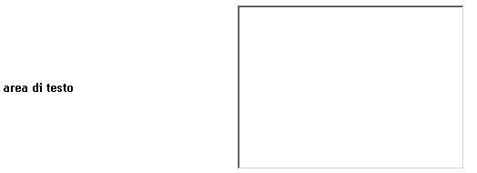

UI Widgets - scheda del widget [TextArea]
In questa scheda è descritto il widget TextArea, in termini di:
- riferimento alla documentazione di dettaglio dell'elemento del metamodello utilizzabile durante la modellazione
- uno o più snapshot che rappresentano graficamente il widget
- una descrizione del widget che ne descrive l'utilizzo e le possibili varianti
- elenco degli eventi gestibili (implicitamente o esplicitamente) relativamente al widget
Identificativo e riferimenti di dettaglio
La documentazione metamodeldoc di dettaglio del widget TextArea è disponibile
qui.
Descrizione
E' il classico widget di immissione di dati testuali a riga multipla.
Il widget completo prevede una label ed l'area di immissione associata.
La label può essere, in casi particolari, vuota.
La TextArea può essere utilizzata all'interno di:
- WidgetsPanel, con layout Verticale, Orizzontale, Griglia
Prevede due modalità di funzionamento: standard e ricca.
modalità standard
Il funzionamento di base della TextArea prevede:
- la possibilità di specificare la dimensione in righe/colonne
dell'area editabile
- la possibilità di effettuare, al momento del submit della form,
la validazione dell'input immesso a seconda del tipo di dato associato
al campo e di alcuni ulteriori specifiche
- la possibilità di essere disabilitato a comando
- la possibilità di essere reso invisibile a comando
- la possibilità di essere disabilitato/invisibile a fronte di regole associate al profilo dell'utente
collegato
- la visualizzazione di un marcatore di errore in prossimità della label, in caso di fallita
validazione
modalità ricca
La modalità ricca prevede di default i seguenti comportamenti aggiuntivi:
- tooltip al passaggio del cursore sulla label del widget
Immagini esemplificative

fig.1 - esempio di rendering grafico del widget
Eventi associati al widget